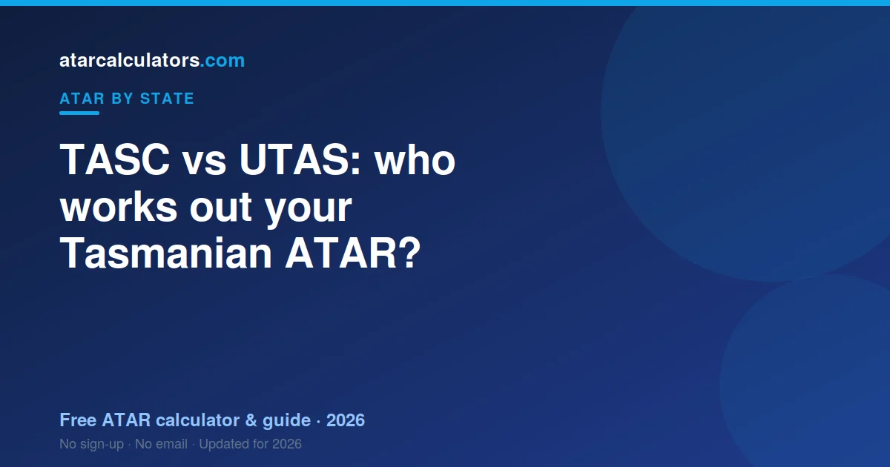

TASC and UTAS do different jobs. TASC, the Office of Tasmanian Assessment, Standards and Certification, runs the TCE. It scales your scores, builds your TES, works out your ATAR, and publishes the conversion table. UTAS (UTAS) is the university you apply to for a place. So TASC gives you your rank, and UTAS handles your application.
Key takeaways
- TASC runs the TCE and works out your ATAR.
- TASC also publishes the table that links your TES to an ATAR.
- UTAS (University of Tasmania) is where you apply for a place.
- TASC gives you your rank; UTAS handles your offer.
- It is easy to mix them up, so keep the two roles separate.

Two bodies, two different jobs
Tasmania is a little different from some states. Instead of one body doing everything, two share the work.
TASC handles your school certificate and your ATAR. UTAS handles your application for a university place. Knowing which does what saves a lot of confusion.
The rest of this guide breaks down each one, so you know who to go to for what.
What TASC does
TASC stands for the Office of Tasmanian Assessment, Standards and Certification. It is the body behind the TCE and your ATAR.
- It runs the TCE, setting subjects and overseeing assessment.
- It scales your subject scores.
- It builds your TES from your best five scaled scores.
- It works out your ATAR and publishes the conversion table.
So TASC is the body that turns your results into a rank. This is the key point many students miss. Your ATAR comes from TASC, not from the university.
What UTAS does
The University of Tasmania, known as UTAS, is the state’s university. It is where you apply for a place in a degree.
UTAS sets the entry requirements for its courses, including ATAR cutoffs and prerequisites. It receives your application, considers your ATAR and preferences, and makes offers.
So UTAS does not work out your ATAR. It uses the ATAR that TASC gives you to decide on your offer.
Why the difference matters
Knowing who does what helps you ask the right questions to the right place. It saves time and stress.
If your question is about your results, your scaling, or your ATAR, that is TASC. If your question is about a course, an entry requirement, or an offer, that is UTAS.
A simple way to remember it: TASC gives you your rank, UTAS gives you your offer. See how your rank is built in our TAS ATAR guide.
How TASC scales your scores
TASC scales each subject so that no subject is unfairly easier or harder for your ATAR. Scaling adjusts for how strong each subject’s group was.
A subject full of high achievers tends to scale up. A subject with a weaker group can scale down. This keeps things fair across very different subjects.
It is about the group, not just you. You can read more in our best scaling subjects guide.
How you apply to UTAS
You apply to UTAS for the courses you want, listing your preferences. UTAS then considers your ATAR and any prerequisites.
The university also runs early and guaranteed entry schemes for eligible students. Some can offer a place before your final ATAR is out, based on your Year 11 results or a recommendation.
Key dates with TASC and UTAS
There are a few key moments. TASC releases your results and ATAR in mid-to-late December. UTAS makes offers soon after.
Application deadlines matter, so note them early. Our TAS release date guide has the timing, and you should confirm the exact dates on the TASC and University of Tasmania websites.
Common questions
Does TASC or UTAS calculate my ATAR?
TASC calculates your ATAR. It scales your TCE scores, builds your TES, works out your ATAR, and publishes the conversion table. UTAS (UTAS) is the university you apply to for a place.
What does TASC stand for?
TASC stands for the Office of Tasmanian Assessment, Standards and Certification. It runs the TCE and works out your ATAR.
What is the difference between TASC and UTAS?
TASC runs the TCE, scales your scores, and works out your ATAR. UTAS (UTAS) is where you apply for a university place. TASC gives you your rank, UTAS handles your offer.
Do I apply for university through TASC?
No. You apply to UTAS for a place. TASC provides your ATAR, which the university uses when it considers your application.
Who publishes the ATAR conversion table in Tasmania?
TASC publishes the table that links your TES to an ATAR each year. So your ATAR comes from TASC, not from the university.
Who do I contact about my results?
Contact TASC about your results, scaling or ATAR. Contact UTAS about courses, entry requirements or offers.
Does UTAS have early entry?
Yes. UTAS runs early and guaranteed entry schemes for eligible students. Some can offer a place before your final ATAR, based on your Year 11 results or a recommendation.